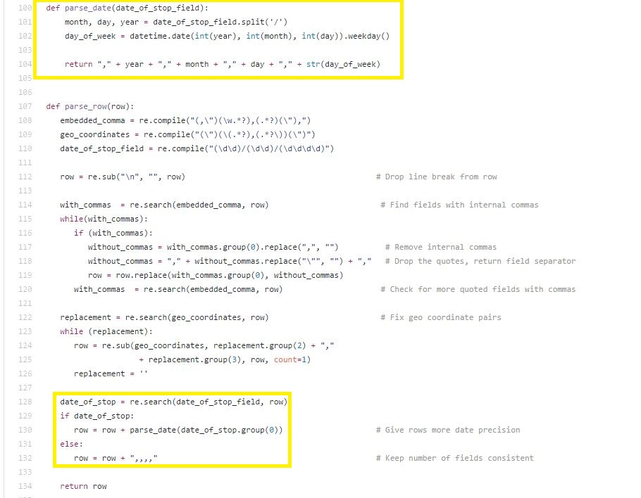
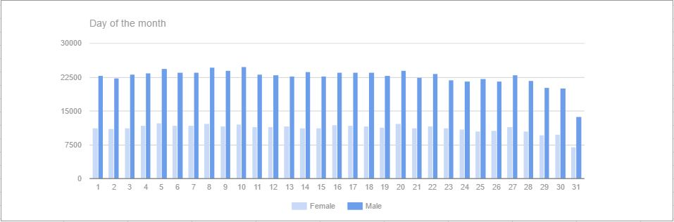
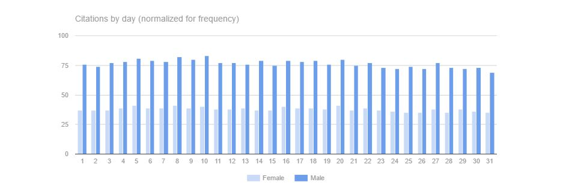
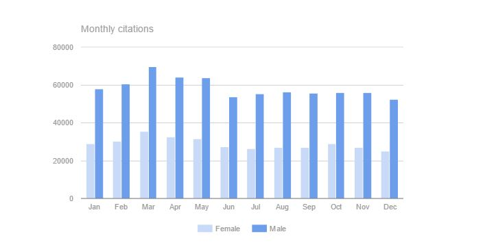
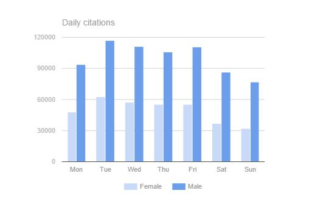

Since the values for the year field were known to be bad, the first step was to define a range of data. Since the file was last updated in 2015, any more recent dates had to be errors. The number of rows per year dropped off sharply before 1994, but were still significant until the early 1990's. The period from 1990 to 2015 was chosen as most likely to hold accurate values.
sqlite> SELECT year, count(year) FROM alldata GROUP BY year;
0 809
4 3
5 1
6 3
--- SNIP ---
1986 778
1987 1119
1988 1509
1989 1689
1990 3005
1991 3659
1992 5651
1993 6881
1994 12017
1995 16694
1996 18729
1997 25766
1998 30632
1999 39528
2000 51483
2001 51493
2002 59170
2003 64478
2004 66794
2005 67255
2006 68922
2007 68032
2008 59877
2009 44734
2010 53482
2011 54611
2012 57094
2013 51225
2014 39097
2015 29480
2016 14522
2017 2022
2018 4
2019 12
2020 4
--- SNIP ---
7247 1
7266 2
7513 1
7575 1
8008 2
8042 3
8615 1
8739 2
9035 2
9382 1
9510 1
9563 1
9867 1
9999 29
6788
01 - Motorcycle 1
INFINITI 1
Year 1
When the Maryland released the citation data, the date was in the form 'mm/dd/yyyy'. After adding additional columns for 'year', 'month', 'd ay', and 'day of the week' parsing the original date during import was an easy way to get a more granular view.

If there really are more citations handed out at the end of the month to 'meet quota' then there should be an uptick in reported citations. However, a first glance shows a serious drop at the end of the month.

What's going on? The reason is that while all months have 28 days in them, only some months have 29 or more. Here is another view adjusted to show the number of citations per month-day.

The second graph is more balanced, men hover around 76.5 citations per day over the 15 years from 1990 to 2015. Women average slightly mor than half that figure, 37.9 citations per day. But even with this weighted view, the number of citations drops off towards the end of the month. Which is the opposite of popular opinion. So perhaps there is a yearly quota?

Or a weekly one?

The numbers don't support either of those ideas. In all cases: day of the month; day of the week; and month, there are more citations toward the beginning of the period rather than towards the end. Given these figures it is hard to conclude that there is a quota in effect.
However, there are some difficulties with the data.